Watch How It's Done
From IMO production to air layering, these videos show the real work behind building soil biology and self-sustaining systems.
Indigenous Microorganisms (IMO)
Capturing and cultivating native beneficial microbes to build living soil
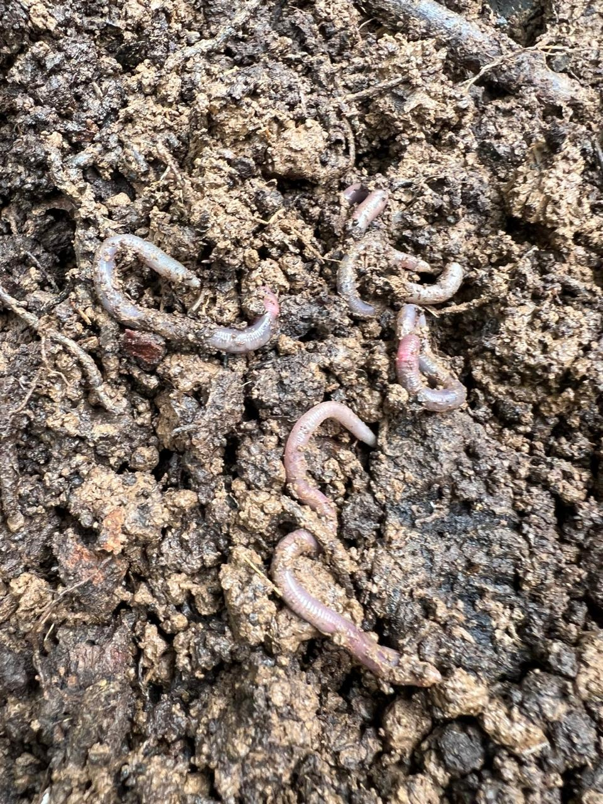
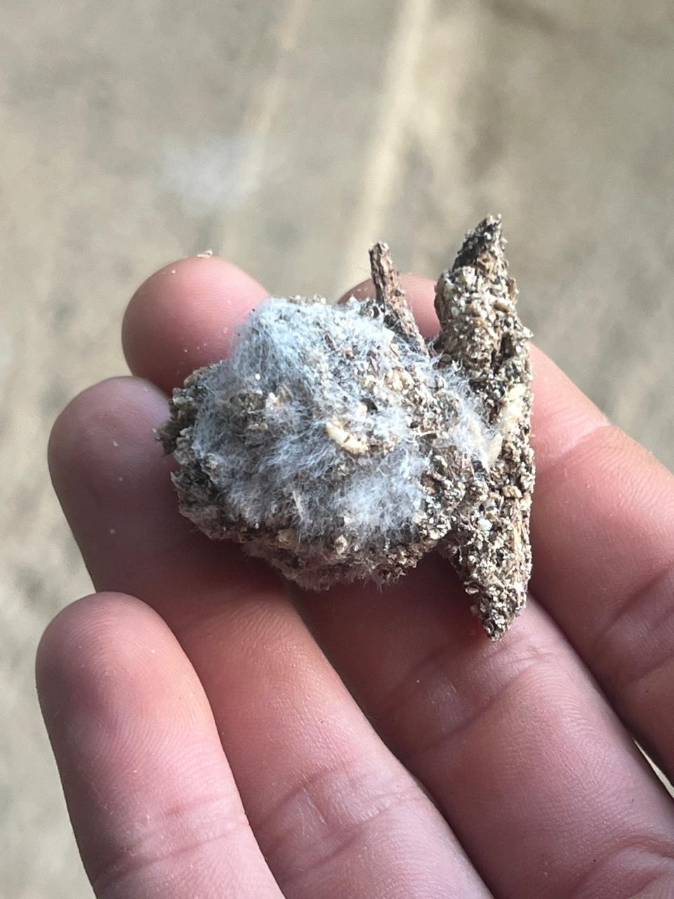
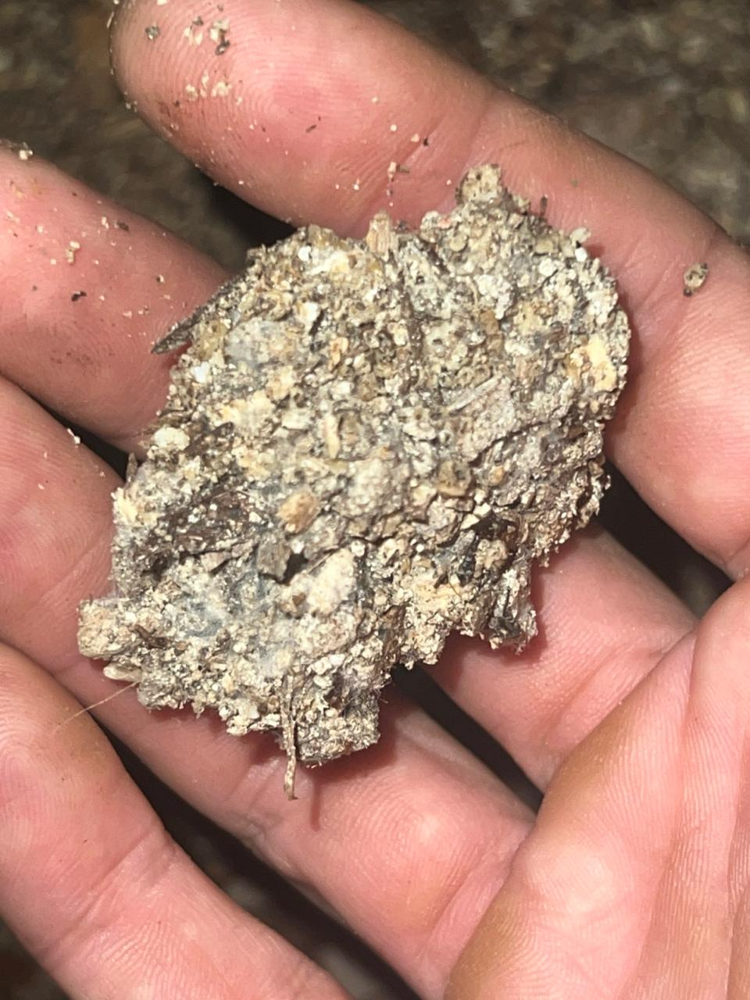
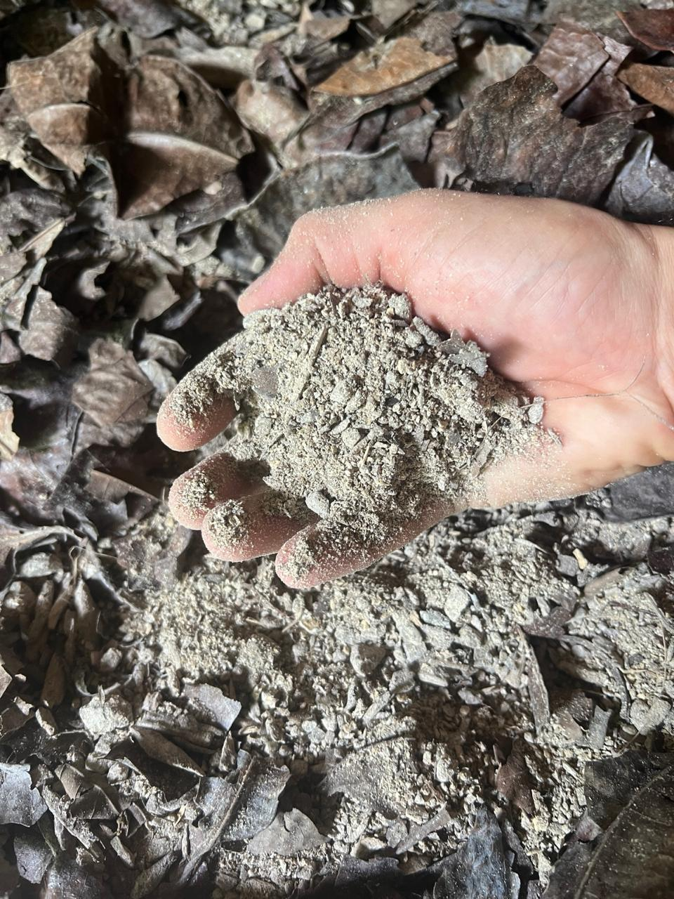
IMO-1: Forest Collection
Collecting indigenous microorganisms from the forest floor using cooked rice to capture native beneficial bacteria and fungi.
IMO-2: Cultivation
Mixing IMO-1 with sugar to multiply beneficial microbes and create a stable culture for soil application.
IMO-3: From Culture to Inoculant
See how finished IMO cultures are built into a living pile, concentrated with beneficial biology.
Oriental Herbal Nutrients (OHN)
Fermenting medicinal herbs to create natural plant growth stimulants and disease resistance boosters.
Animal Integration
Chickens, ducks, and livestock as part of the nutrient cycle—no smell, no waste
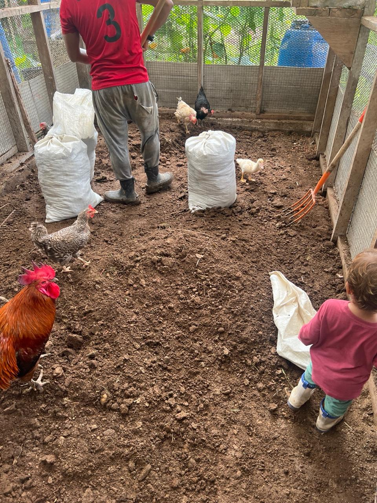
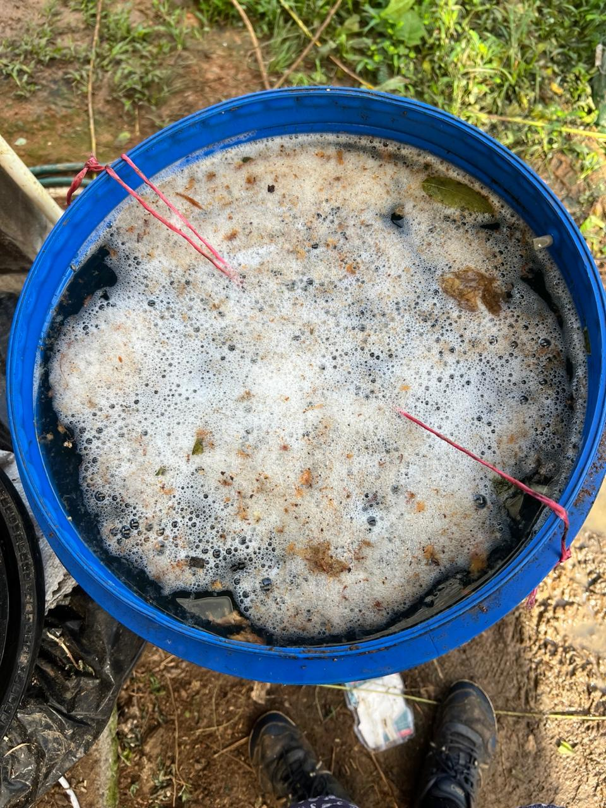
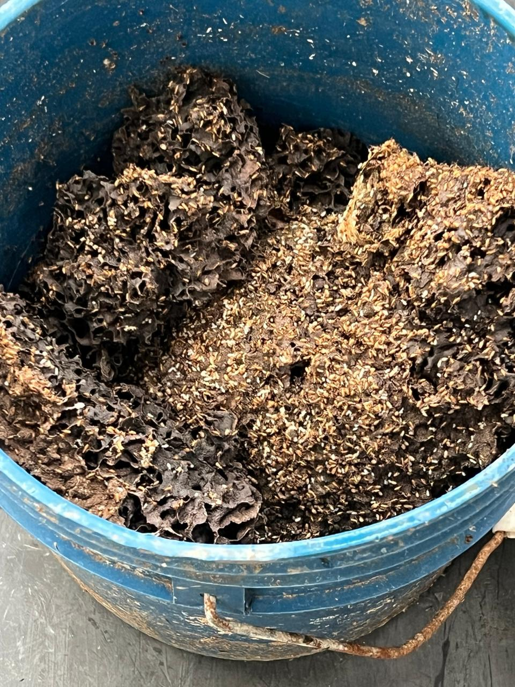
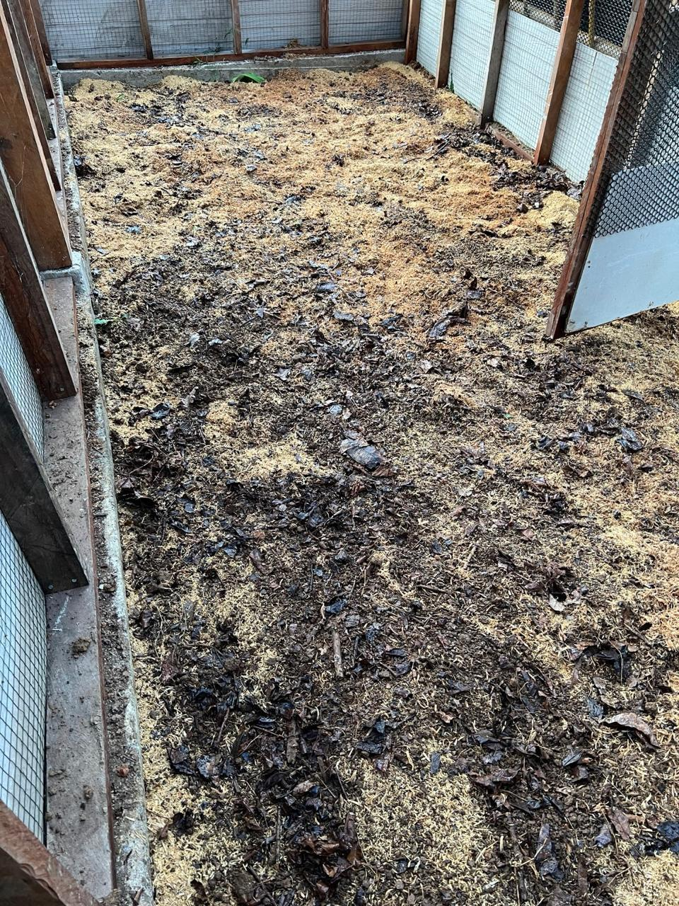
Animal Integration Systems
How chickens, ducks, and other animals fit into regenerative farming systems as active contributors.
No-Smell Animal Systems
Using IMO and deep litter methods to eliminate odor while building biologically activated inoculant from animal areas.
Baby Chickens
Raising healthy chicks with proper nutrition and biological support from day one.
No-Smell Systems Explained
The science behind odor-free animal integration using beneficial microbes and proper carbon ratios.
Closing the Food Loop
Farm extras and kitchen scraps go to the animals, creating a zero-waste nutrient cycle.
Tree Propagation & Planting
Air layering, grafting, and KNF transplanting techniques for stronger, faster-growing trees
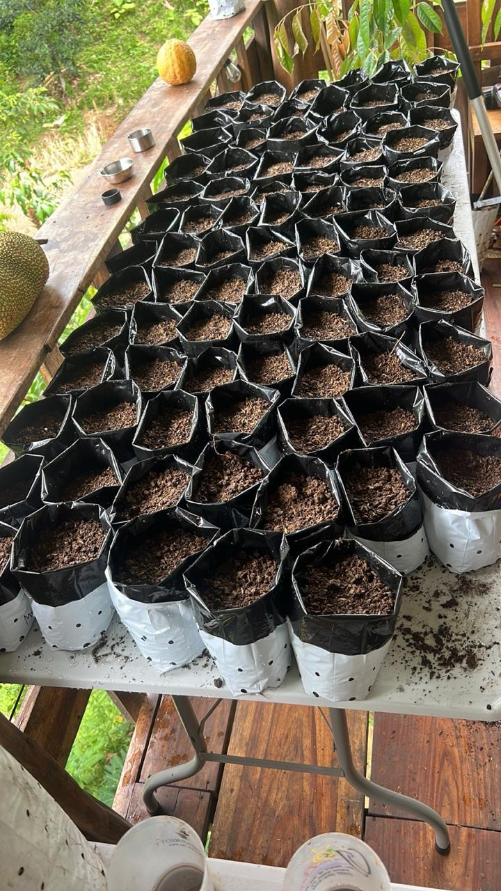
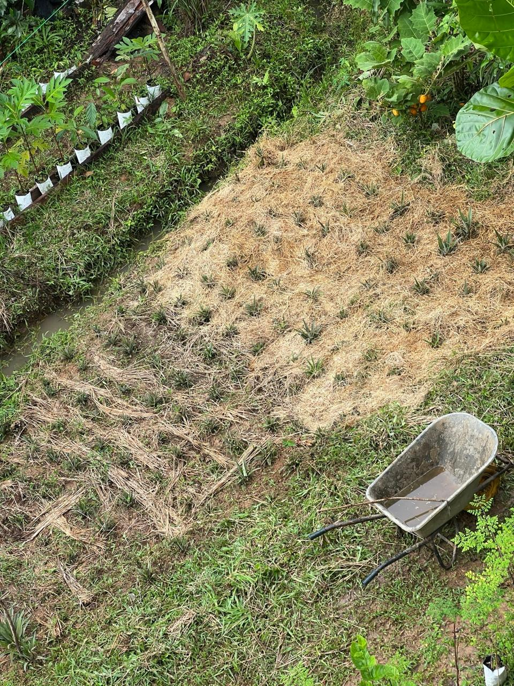
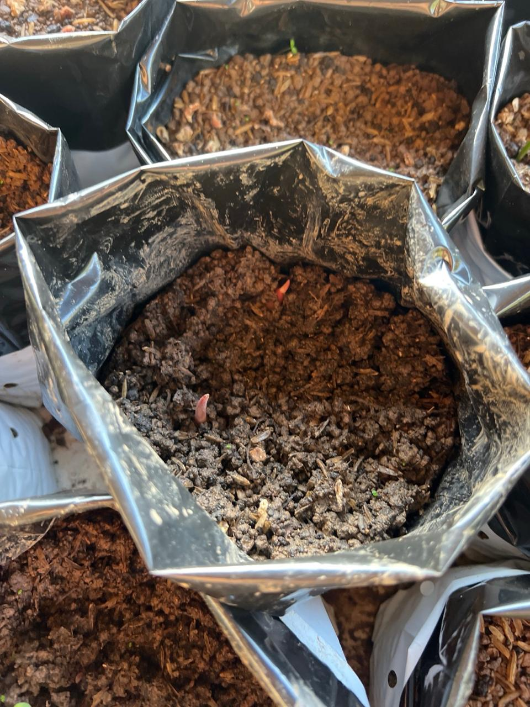
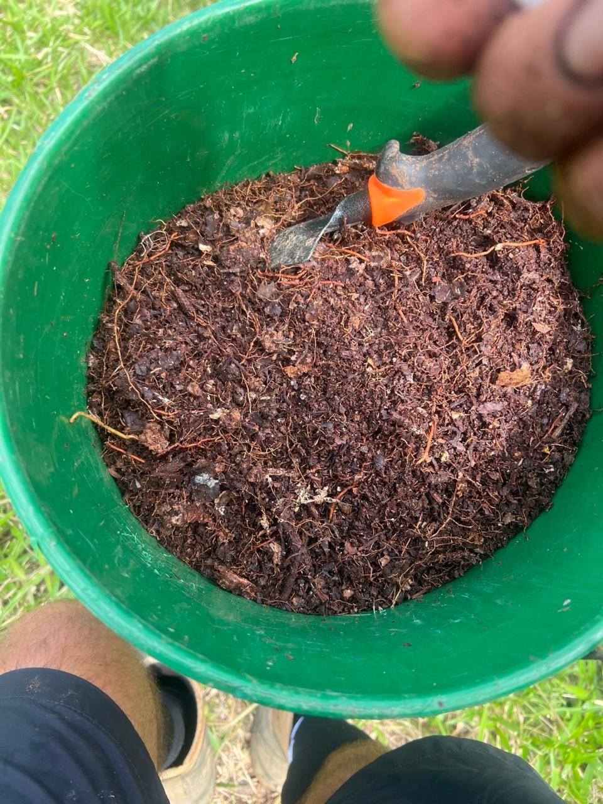
Micrografting Abiu
Precision grafting technique for propagating rare and productive abiu varieties.
Air Layering
Creating rooted cuttings while still attached to the mother plant for guaranteed success and faster fruiting.
Bare Root KNF Planting
Transplanting technique using KNF solutions to eliminate transplant shock and accelerate establishment.
Root Development
Showing the healthy, vigorous root systems produced by our nursery trees using biological growing methods.
Pruning & Results
Proper pruning techniques and the outcomes of soil-first farming
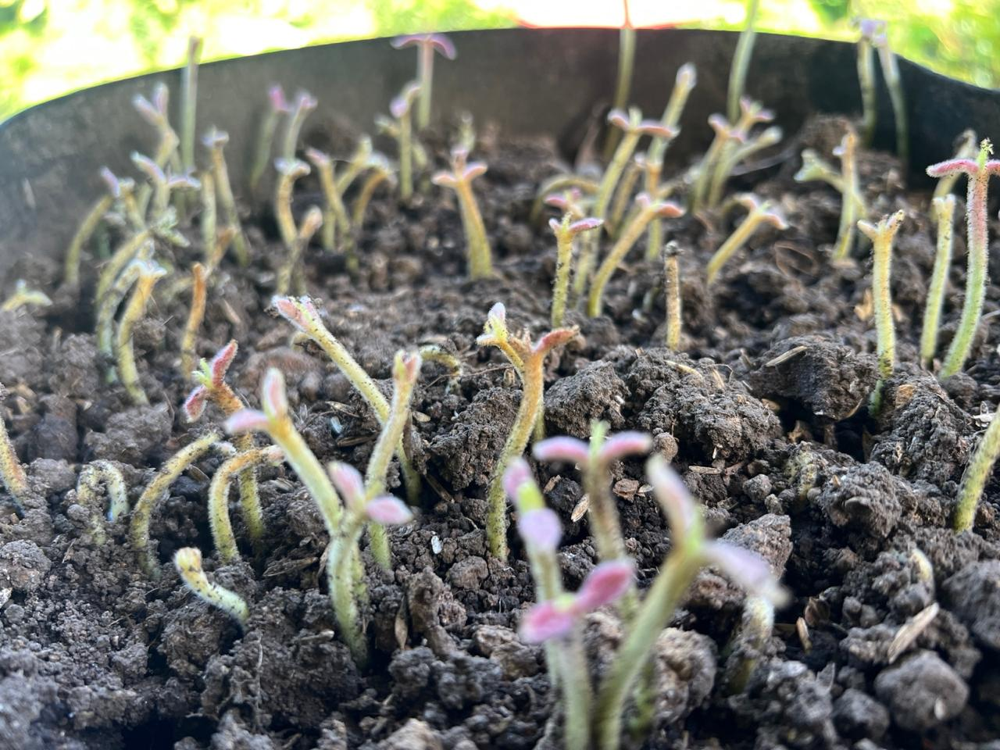
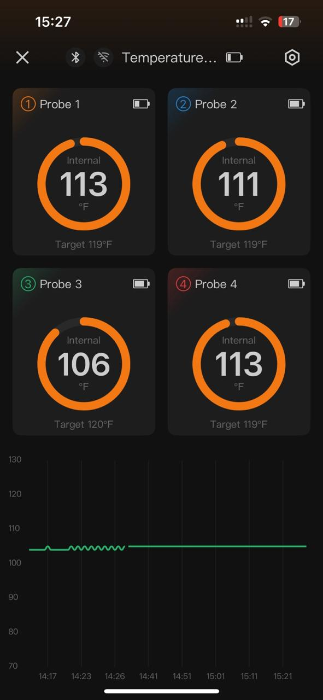
Jackfruit Pruning
Strategic pruning for better light penetration, air flow, and manageable tree size without sacrificing production.
Healthy Soil = Early Abundance
Results of soil biology work: faster growth, earlier fruiting, and stronger plants without synthetic inputs.